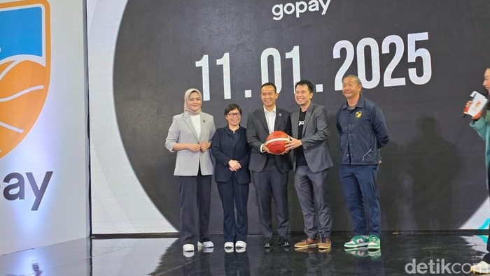

Jadwal IBL 2025: Start 11 Januari, Sajikan Total 203 Pertandingan
Purwakarta, AboutNEWS -- Kompetisi bola basket Indonesia Basketball League (IBL) 2025 akan dimulai 11 Januari dan berakhir pada bulan Juli. Ada total 203 pertandingan. Direktur IBL Junas Miradiarsyah menyebut bahwa IBL lanjut menggunakan format home-away. IBL menilai format ini sukses musim lalu. "Kalau dari segi peraturan tak banyak perubahan dari sebelumnya, jadi artinya IBL sudah mengikuti stabilitas yang kita inginkan dari sisi peraturan. Kemudian home away tetap kita pertahankan dari tahun lalu, dan sangat baik semuanya naik," kata Junas dalam keterangannya di kawasan Kuningan, Kamis (12/12/2024)
Akan ada 14 tim peserta, masing-masing akan menjalani 26 kali pertandingan di musim reguler. Sementara untuk babak play-off tetap menggunakan sistem best of three. Soal perkembangan perputaran pemain, eks pemain basket itu juga mengatakan bahwa ada hal positif yang bisa dilihat tahun ini. Indikatornya adalah bursa pemain yang terus meningkat. "Per hari ini ada 39 perputaran pemain lokal di offseason. Ini semua menunjukkan bahwa sudah terbangun mindset tim-tim untuk lebih baik sehingga kompetisi tahun depan bakal lebih menarik," ujarnya. Baca juga: Pelita Jaya Kawinkan Gelar Juara IBL 2024 dan All Indonesian 2024 "Seperti Abraham Wenas yang ke Solo (Kesatria Bengawan Solo), lalu Arki (Dikania Wisnu) yang belasan tahun memperkuat Satria Muda kini membela Dewa United, ini tentu diharapkan akan menaikkan level kompetisi akan semain kuat. Pasti akan seru musim depan," ucap Junas. Junas sekaligus menambahkan bahwa FIBA sebagai otoritas tertinggi bola basket melihat perkembangan bola basket di Indonesia. Seharusnya ini menjadi pelecut semangat untuk bisa lebih baik. "Kita tahu, bahwa FIBA membuka kantor di Indonesia bukan tanpa alasan. Mereka melihat perkembangan dan potensi bola basket, dengan ketertarikan pasar yang semakin besar. Namun potensi ini harus juga disertai dengan inovasi, agar minat terhadap bola basket lebih besar lagi," tuturnya. Baca artikel AboutNEWS, "Jadwal IBL 2025: Start 11 Januari, Sajikan Total 203 Pertandingan"